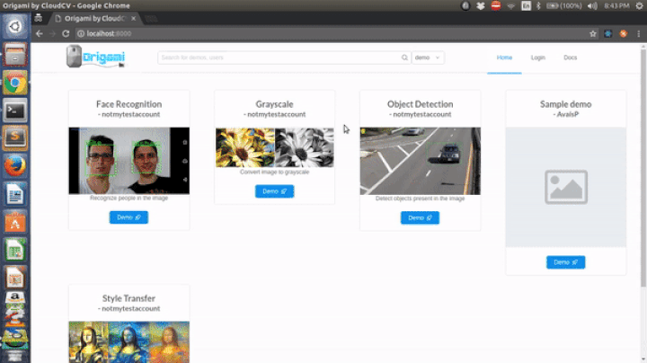

Origami
I have been working on Origami as a part of Google Summer of Code for the last 4 months with CloudCV. The last 3 months have been a great experience for me. I have been able to complete almost all of the features we had decided at the start of the summer. While working on the projects I have learned a lot of new things ranging from React to configuring projects for a production environment. In addition to that, my coding style has improved a lot and this was something which only Open Source could help me with. I would like to thank my mentors Deshraj Yadav, Ashish Chaudhary and Harsh Agrawal for giving me this opportunity and guiding me throughout the GSoC period. This post serves as a summary of all the work that I have done during the GSoC period. For a detailed overview of the first 2 months, check my previous post.
Contributions
Here is a list of all the merged PRs:
#42 : Introduces Ant Design and changes the home page
#43 and #44: Segregates the documentation from the main app and switches to read the docs
#45: Introduces Django Rest Framework with mongo to the project
#46: Translates the backend to Django and replaces socket.io with Django Channels
#47: Configures the old React frontend to use a Django backend
#48: Adds webpack configuration for production
#49: Adds settings for user to define HOST and PORT
#50: Adds asgi file for Django Channels
#51: Changes webpack plugins for production
#52: Adds a deployment script
#53: Adds configuration to use PostgreSQL for the DB
#54: Creates base components library for components to inherit from
#55: Modifies my demos page to use AntD and homepage to display sider instead of the Material UI navbar
#56: Changes the share profile page to use ant design
#57: Adds the frontend for the discover page where users can search for demos and users
#58: Adds the backend APIs for the discover page
#59: Dockerizes the application for ease of use
#60 and #61: Allows users to mix input components when creating demos thus doing away with the need to write code
#62: Allows the demo creator to add sample image inputs which the users can select instead of uploading images.
#63: Gets the project to always display the initial setup page if settings aren't present
#64: Only display 4 demos in a row
#65: Remove non working components from the nav bar
#68: Adds logo to the nav bar
#69: Fixes deleting demos from the my demos page. t.map is not a function is no longer displayed.
#70: Updates the readme
#71: Updates the documentation
#72: Move the new prop-types package from the deprecated Proptypes in the main package
#73: Allows users to search for demos even when not logged in
#74: Minor fixes for the UI
Discover Page

Sample Inputs

To conclude, I would definitely recommend everyone to contribute to Open Source projects. If you would like to contribute to CloudCV, please checkout this link.